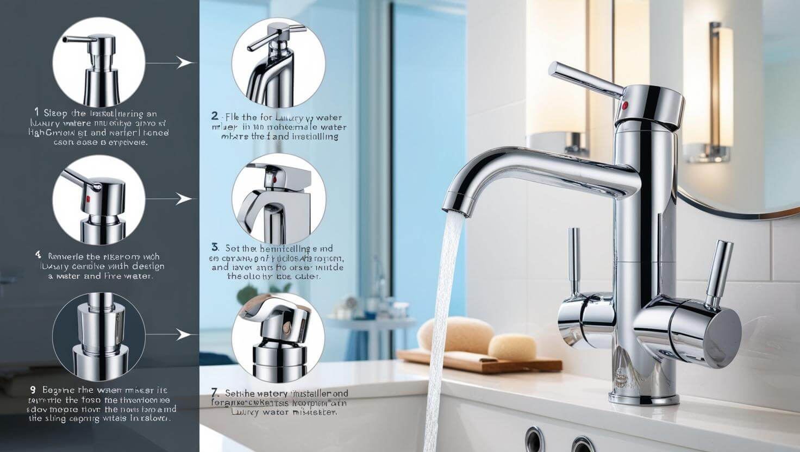

تركيب وإصلاح الحنفيات والخلاطات
خدمة احترافية لتركيب وإصلاح جميع أنواع حنفيات وخلاطات المياه للمطابخ والحمامات، مع ضمان الجودة وأفضل الأسعار.
اطلب الخدمة الآنحنفيات وخلاطات بجودة عالية وتركيب متقن
تعتبر الحنفيات والخلاطات من العناصر الأساسية في أي منزل، واستخدامها اليومي يتطلب أن تكون ذات جودة عالية ومركبة بشكل صحيح لتجنب المشاكل المستقبلية مثل التنقيط أو التسرب. في السباك الذهبي، نقدم خدمات متكاملة لتركيب وإصلاح جميع أنواع الحنفيات والخلاطات.

خدمات تركيب الحنفيات
سواء كنت تقوم بتجديد مطبخك أو حمامك أو تحتاج فقط إلى استبدال حنفية قديمة، فإن فريقنا المحترف جاهز لتقديم خدمة تركيب سريعة ومتقنة:
- تركيب حنفيات المغاسل (الحمامات والمطابخ).
- تركيب خلاطات الدش والبانيو.
- تركيب حنفيات الشطاف.
- تركيب الحنفيات الخارجية للحدائق وغيرها.
- توفير وتركيب أفضل أنواع الحنفيات والخلاطات من ماركات عالمية.
- ضمان التركيب الصحيح ومنع أي تسربات مستقبلية.
خدمات إصلاح الحنفيات
هل تعاني من حنفية تنقط باستمرار أو خلاط يصعب التحكم في درجة حرارة مياهه؟ لا تتجاهل هذه المشاكل التي قد تؤدي إلى هدر المياه وزيادة فاتورتك. نحن نقدم حلول إصلاح فعالة لـ:
- إصلاح تنقيط الحنفيات والخلاطات.
- إصلاح ضعف تدفق المياه.
- إصلاح مشاكل التحكم في درجة حرارة المياه بالخلاطات.
- استبدال الأجزاء التالفة (مثل قلب الحنفية أو الخلاط) بقطع أصلية.
- إصلاح التسربات من قاعدة الحنفية أو التوصيلات.
لماذا تختارنا لخدمات الحنفيات؟
- فنيون متخصصون في تركيب وإصلاح جميع أنواع الحنفيات والخلاطات.
- استخدام أدوات حديثة تضمن تركيبًا وإصلاحًا دقيقًا.
- توفير قطع غيار أصلية وعالية الجودة.
- خدمة سريعة واستجابة فورية لطلباتكم.
- أسعار تنافسية وضمان على العمل وقطع الغيار.